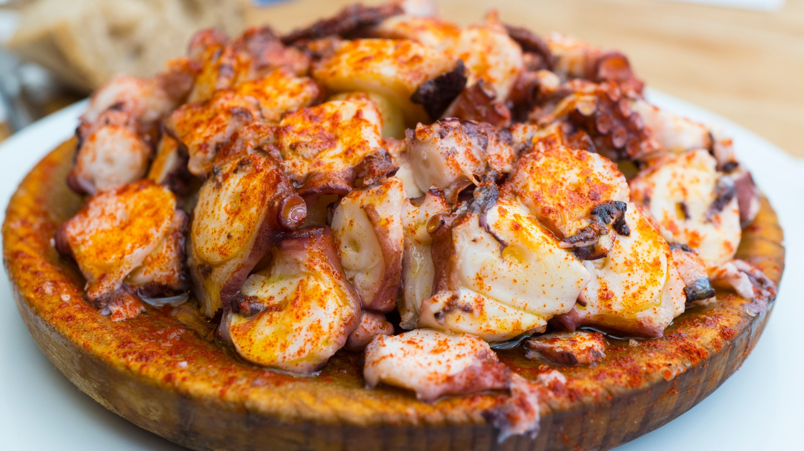
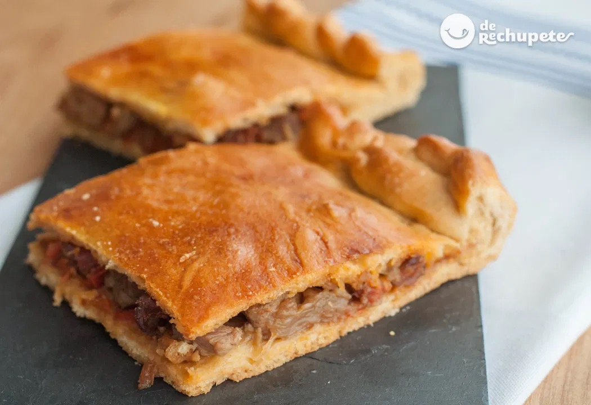
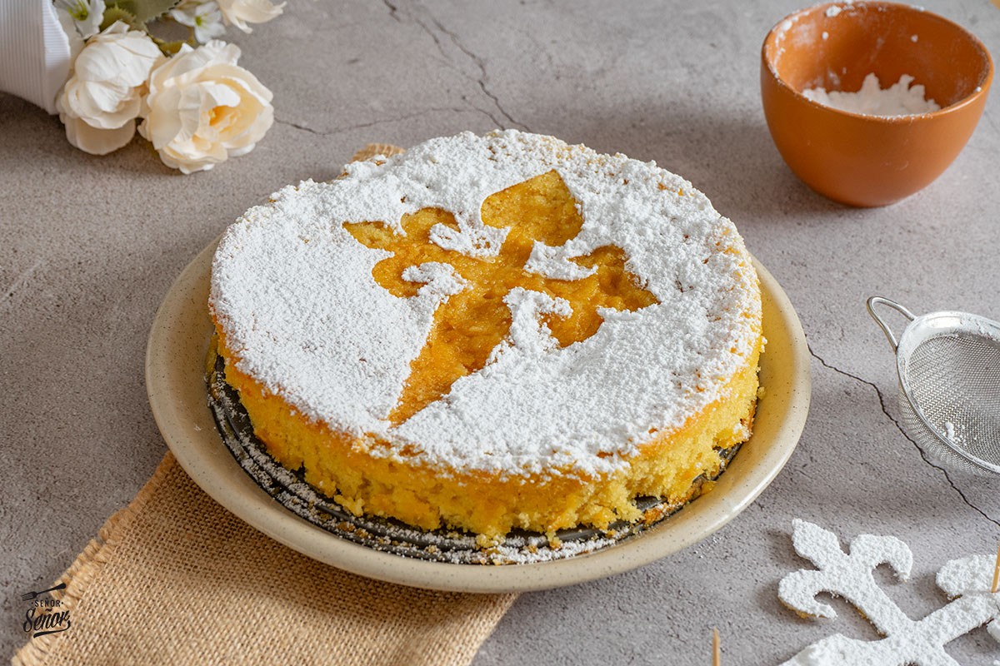

Platos Típicos Gallegos
Descubre los imprescindibles de nuestra tierra.
-
Pulpo á feira

El clásico de las fiestas gallegas, cocido en su punto con pimentón, aceite y sal gruesa.
Ver detalle -
Empanada gallega

Elaboración tradicional horneada, con rellenos variados que representan la cocina de aprovechamiento.
Ver detalle -
Tarta de Santiago

Sencillo y delicioso postre de almendra típico de la repostería gallega y el Camino de Santiago.